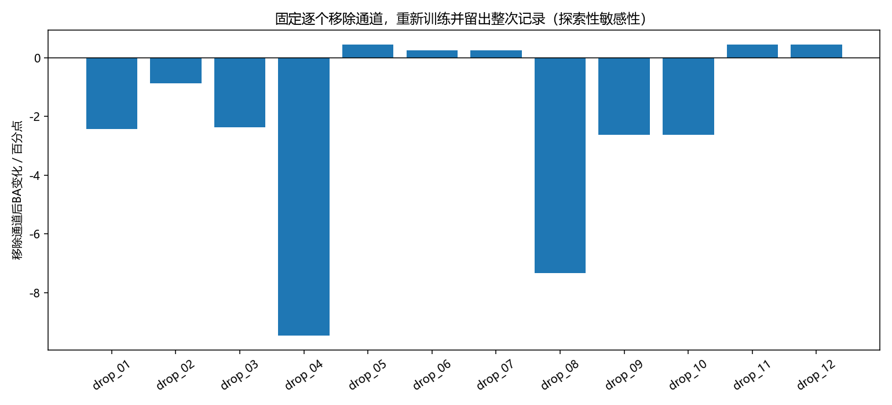
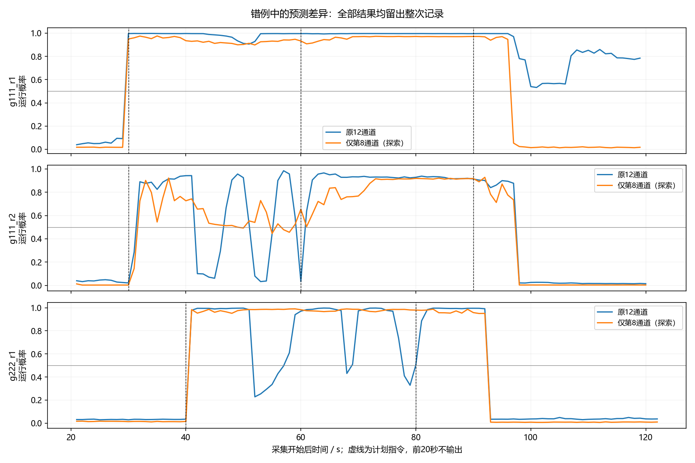
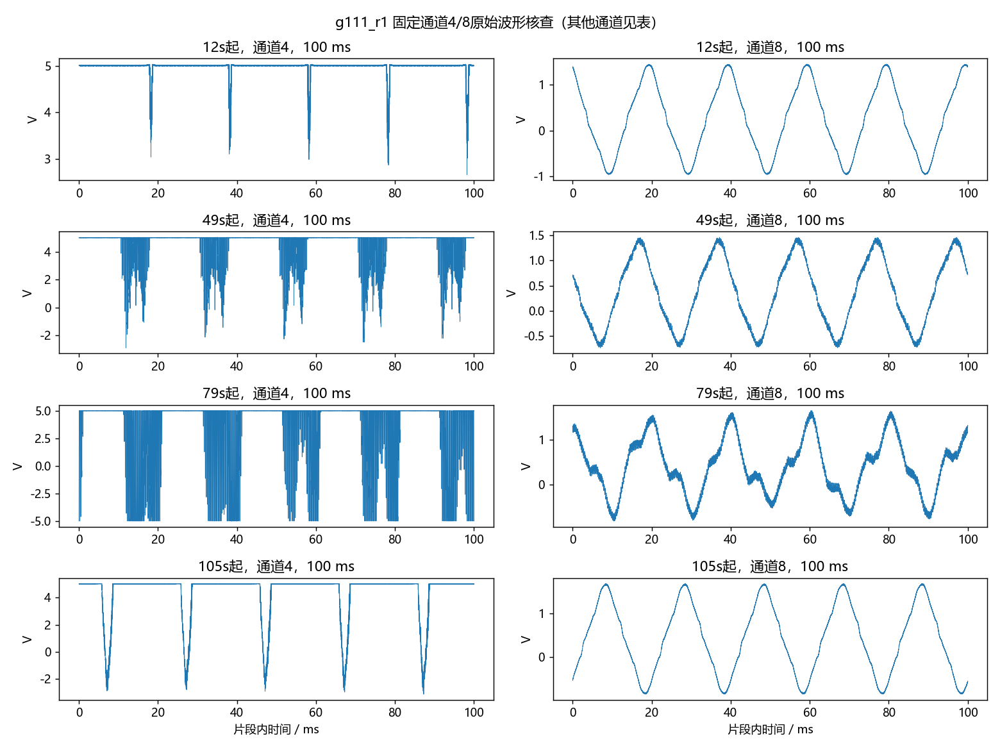
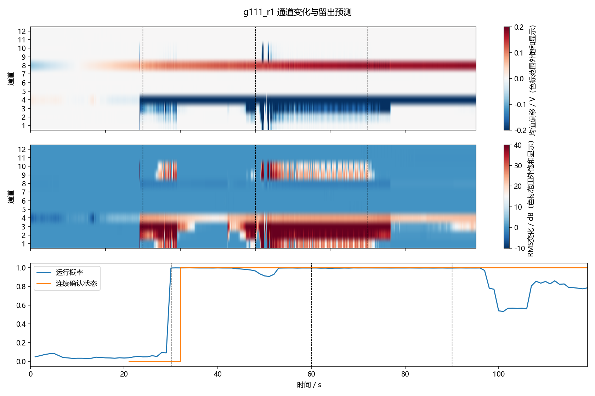
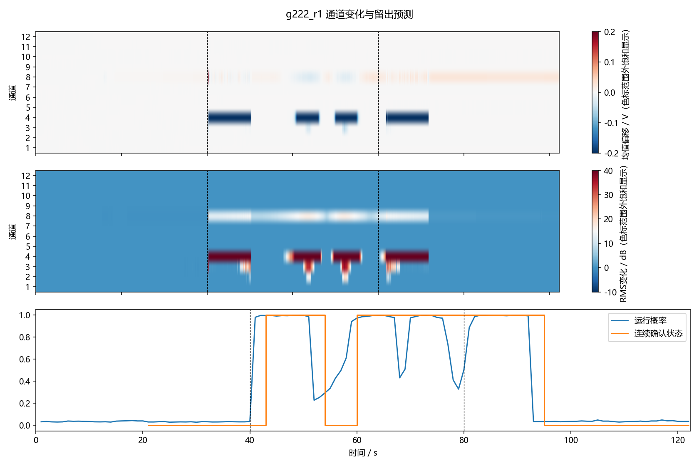

2026年9月22日。用户已确认：12通道是不同位置的芯片，可能存在坏道，后续按动态监测、动态排除处理。本报告不再将任何一路假设成转速、电源或专用参考输入；具体位置编号、芯片输出范围和采集量程尚未给出。
现有问题主要是通道信息融合和背景残留，不是算法完全看不到启停。 本轮找到值得优先验证的第8通道，同时明确：第4通道异常与有效响应并存，不能凭波形幅值或一次失误直接永久删除。
保持原识别模型、旧回放和原始TDMS不变。本轮独立重训28种诊断配置：原12路、逐一移除12路、分别仅用某一路12种、去慢变均值、去频谱、仅频谱。每种配置都做8折留一整次记录，共224个拟合。特征归一化仍只读该次记录5–20秒背景；模型训练完全不包含留出记录；评分只用20秒之后的稳定窗口。
“移除一路”和“只用一路”都重新训练相同类型的逻辑回归并保持参数C=0.1，不是把测试记录中看起来不好的片段删掉。通道集合在每个配置内固定，因而本轮是筛查依据，尚不是动态变更通道集合的在线算法。单路时中位数与90%分位会重复，仍保留原34维特征结构和正则化设置，因此它是现有流程下的敏感性结果，不是与模型结构无关的通道本征性能。
另对3个重点记录、各4个时刻、每时刻12路0.1秒原始片段做波形核查，共144个通道片段。这些短片段用于解释现象，完整时序和评分来自昨日全量提取。
| 通道 | 采集名称 | 移除后BA变化_百分点 | 单路确认BA_% | 旧规则标坏次数_8次中 |
|---|---|---|---|---|
| 1 | cDAQ9188-1B5105DMod1/ai0 | -2.417 | 67.208 | 0 |
| 2 | cDAQ9188-1B5105DMod1/ai1 | -0.875 | 77.986 | 1 |
| 3 | cDAQ9188-1B5105DMod1/ai2 | -2.375 | 78.653 | 2 |
| 4 | cDAQ9188-1B5105DMod1/ai3 | -9.458 | 88.194 | 4 |
| 5 | cDAQ9188-1B5105DMod2/ai0 | 0.458 | 58.361 | 0 |
| 6 | cDAQ9188-1B5105DMod2/ai1 | 0.250 | 70.292 | 0 |
| 7 | cDAQ9188-1B5105DMod2/ai2 | 0.250 | 60.653 | 0 |
| 8 | cDAQ9188-1B5105DMod2/ai3 | -7.333 | 95.861 | 5 |
| 9 | cDAQ9188-1B5105DMod3/ai0 | -2.625 | 61.569 | 0 |
| 10 | cDAQ9188-1B5105DMod3/ai1 | -2.625 | 56.500 | 0 |
| 11 | cDAQ9188-1B5105DMod3/ai2 | 0.458 | 56.167 | 0 |
| 12 | cDAQ9188-1B5105DMod3/ai3 | 0.458 | 63.667 | 0 |
第4通道对应 cDAQ9188-1B5105DMod1/ai3；第8通道对应 cDAQ9188-1B5105DMod2/ai3。这里编号按1起算，采集软件ai编号仍按0起算；不要把第8通道误认成ai8。

删除第5、6、7、11、12路只改善约0.25–0.46个百分点，不能据此判它们是坏道；也可能只是冗余信息或聚合分位位置改变。多数通道单路识别较弱，同样不能证明芯片损坏：不同位置的信号强弱可能本来就不同。
| configuration | confirmed_BA | off_false_positive | on_miss | event_hits | unmatched_events |
|---|---|---|---|---|---|
| 原12通道 | 0.877 | 0.178 | 0.068 | 15 | 6 |
| 移除第4通道 | 0.783 | 0.173 | 0.262 | 14 | 17 |
| 移除第8通道 | 0.804 | 0.178 | 0.214 | 15 | 18 |
| 仅第8通道 | 0.959 | 0.083 | 0.000 | 16 | 0 |
| 只使用频谱 | 0.899 | 0.143 | 0.058 | 16 | 7 |
| 不使用慢变均值 | 0.899 | 0.143 | 0.058 | 16 | 9 |
表中BA、误报和漏判列采用0–1比例，事件列为次数。所有方案都有同样的16个计划启停事件。仅第8路16/16命中且无额外事件，并不表示逐秒输出全对：停机前后尚存在9–15秒相对计划指令的判定延迟。

第8路的优势是跨重复启停变化更一致。尚不能从单路成绩推出它测到了某种特定物理源，也不应现在就把系统永久固定为只用第8路。后续应建立逐路质量和逐路状态判断，再研究如何融合有效芯片，而不是继续把所有通道无差别压成中位数/分位数。
按用户时间表，g111_r1在90秒停机，约5秒关闭过程后，本轮从97秒起评分；97–117秒共20秒全部误报为运行，平均模型运行概率0.724。20秒内没有“原始预测已经正确但连续确认未更新”的情况，因此这一段不是多等3秒就能解决的确认延迟，而是特征本身仍被模型判成运行。
相对于5–20秒初始基准，后背景第4通道平均值的时间中位数偏移约−0.739 V，RMS中位数约2.042 V、增加21.81 dB；第3路RMS增加约2.15 dB，第2路约0.61 dB。第8路RMS变化约0.50 dB，其均值也有约0.173 V变化。与前一份报告使用5–25秒前背景的数值可能略有差异，本轮统一采用识别器的5–20秒基准。

同样是第4路，初始背景已有周期性下凹，运行期间出现更强的下冲，停机后的105秒片段仍有较深下凹。第8路保持连续变化的波形形态，运行时叠加的变化与停机后的形态有所区别。图为各100毫秒，纵轴逐子图自动缩放；形态恢复不代表均值完全回到原基准。
在已训练且留出g111_r1的模型中，97–117秒推动“运行”的主要标准化特征贡献为：50 Hz邻带90%分位约+1.076、慢变均值90%分位约+0.705、100 Hz邻带90%分位约+0.557。单位为逻辑回归logit贡献，不是电压，也不是概率百分点；50 Hz邻带不等于证明来自变频器50 Hz指令。
保持模型不变、分别把某一路的归一化特征暂置为基准值，再重新聚合，得到第3、2、4路对该段运行logit的平均影响约+1.293、+0.638、+0.577。这是模型反事实敏感性，并不等同于关掉某个芯片的真实实验，也不能把各路影响相加，因为中位数/分位数具有相互作用。
删除第4路重新训练后，首次后背景仍100%误报；去掉慢变特征后该比例降到65%，但仍未解决。说明错误来自多种背景残留特征和融合规则，不能简单归因为“第4路坏了”。
以下起止区间是造成判定的1秒输入窗口，采用左闭右开；例如[97,99)对应两次窗口，判定在窗口结束时可用。
| 记录 | 错误类型 | 窗口起点_s | 窗口终点_s | 持续_s | 平均运行概率 | 原始判定已正确但确认仍错_s |
|---|---|---|---|---|---|---|
| g111_r1 | 关态误报运行 | 97 | 117 | 20 | 0.724 | 0 |
| g111_r2 | 运行漏判为关 | 43 | 48 | 5 | 0.399 | 2 |
| g111_r2 | 运行漏判为关 | 53 | 57 | 4 | 0.592 | 2 |
| g111_r2 | 关态误报运行 | 97 | 99 | 2 | 0.020 | 2 |
| g111_r3 | 关态误报运行 | 97 | 98 | 1 | 0.067 | 1 |
| g111_r4 | 关态误报运行 | 97 | 98 | 1 | 0.075 | 1 |
| g111_r5 | 关态误报运行 | 97 | 98 | 1 | 0.051 | 1 |
| g222_r1 | 运行漏判为关 | 53 | 59 | 6 | 0.517 | 2 |
| g222_r1 | 关态误报运行 | 87 | 94 | 7 | 0.720 | 2 |
| g222_r2 | 关态误报运行 | 87 | 94 | 7 | 0.687 | 2 |
| g222_r3 | 关态误报运行 | 87 | 92 | 5 | 0.540 | 2 |
上述11个错段只覆盖预先定义的稳定评分窗口，过渡区的未匹配跳变另存事件表，没有混为同一统计口径。


均值热图色标固定±0.2 V，RMS色标−10至40 dB，超出色标的变化以端点颜色显示，不代表实际电压在该值被裁剪。原始数据未作限幅修改。
按用户提供的芯片定义，动态剔除是合理方向，但当前需要把两个概念分开记录：测量数据失效与芯片位置上的有效但不同的响应。
| 层级 | 证据与处理建议 | 本批数据能否据此确定坏道 |
|---|---|---|
| 明确采集无效 | 非有限值、缺样、通道中断、持续完全不变等；这类可直接退出状态融合并记录故障 | 全量提取未发现非有限或缺样；初始基准12路都非平坦，因此不能仅据此找到坏芯片 |
| 疑似芯片/前端异常 | 持续极端偏置、平台、异常下冲，结合芯片输出范围与近期自身历史判断；标记可疑并观察恢复 | 第4路需优先核查；没有输出量程与故障真值，暂不能认定硬件损坏 |
| 位置差异/工况响应 | 与启停相关、可重复且能在新重复中预测状态；保留该路证据，同时监测自身健康 | 第8路是重点候选；旧相对离群规则可能误伤该路 |
| 模型融合问题 | 芯片信息存在，但中位数/分位数把局部有效响应稀释，或把残留背景混成运行证据 | 逐路建模优于无差别聚合的结果支持继续检查这一问题 |
本轮没有按已知停机时刻倒推某路是坏道，也没有把“提高准确率”当成判坏依据。 真正上线的质量判断必须只依赖当时及之前数据，不能读取计划工况或未来波形。对于同一次操作引起的同步变化，应先保留为待解释响应；对于明确失效再剔除。仅凭“与别的芯片不同”剔除，可能正好移除第8路。
多数通道基准靠近+5 V，第8路基准不同；在输出范围未知时，不能认定前者正常或饱和，也不能认定后者异常。原始片段中的接近±5 V平台目前只能支持“需要核实限幅/饱和可能”，不能区分传感器、前置放大器和采集卡各自的贡献。
本轮诊断完成后，下一步应优先实现逐路质量状态→有效路单独判定→融合启停结果，把退出/恢复原因显示出来；将第8路保留为对照，不直接永久锁定某一路。先在这8份记录上回放动态质量规则，检查是否误删了有用芯片，再固定规则用新记录验证。
对g111_r1，重点降低慢变/低频背景残留造成的误报；对g111_r2、g222_r1，重点处理接近阈值时的跳变；对其余停机误报，单独权衡确认延迟。频率细分暂不作为这一步优化目标。
目前的95.9%只是同批数据筛选后的探索候选。比较了多个通道和特征组，未做独立选型验证，所以本报告不宣称系统性能已从87.7%正式提升到95.9%。现有识别器、训练模型和演示入口保持原版，便于下一步公平比较。
新增分析脚本scripts/diagnose_20260922_channels.py和报告脚本scripts/report_20260922_channel_diagnosis.py。输出集中在results/20260922_channel_diagnosis；原始数据和已有识别程序未修改。
复核：重算原12路特征得到的运行概率与现有识别器一致；8份确认状态逐秒一致；logit加和检查通过；全部3份重点原始文件读取成功。此前全量采样核查结果继续有效。本轮没有根据波形外观改写任何原始采样值。
$env:PYTHONIOENCODING='utf-8'
$env:OPENBLAS_NUM_THREADS='2'
D:\Anaconda\python.exe scripts/diagnose_20260922_channels.py
D:\Anaconda\python.exe scripts/report_20260922_channel_diagnosis.py